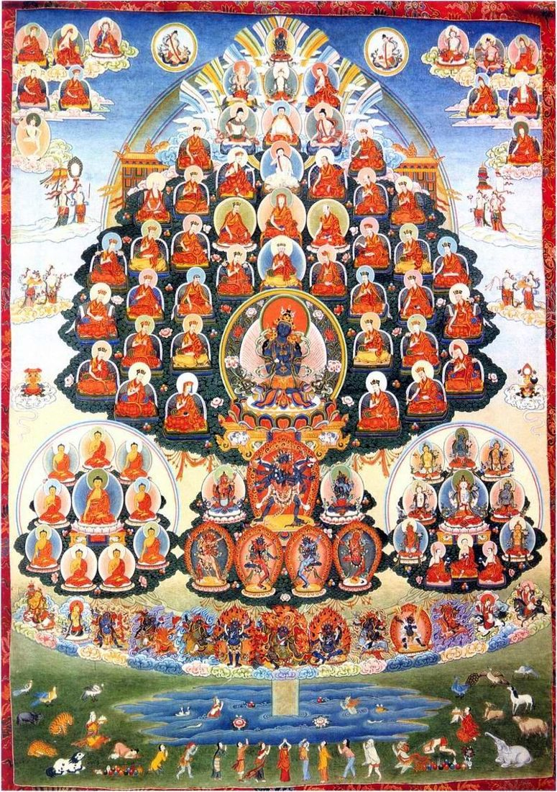

Blog
Our in-depth guides to thangka materials, symbolism, and care.


A practical guide to caring for a thangka at home: how brocade mounts work, where to hang it, how much light is safe, ideal humidity, cleaning, storage, and framing options.
What a mandala thangka means: the outer rings of fire and vajras, the four gates, the palace, the central deity, colors and directions, and how mandalas are used in meditation.

A close look at the first and most overlooked stage of thangka making: choosing the cotton, stretching it on a frame, sizing it with hide glue, applying gesso, and burnishing it smooth.

A guide to the refuge tree (field of merit) thangka: its central teacher, the lineage, buddhas, dharma texts, sangha, meditation deities and protectors, and how it is used in practice.

Not all thangkas are painted. Learn about appliqué, embroidered, and woven silk thangkas, the giant festival thangkas unveiled at monasteries, how they are made, and how to care for them.